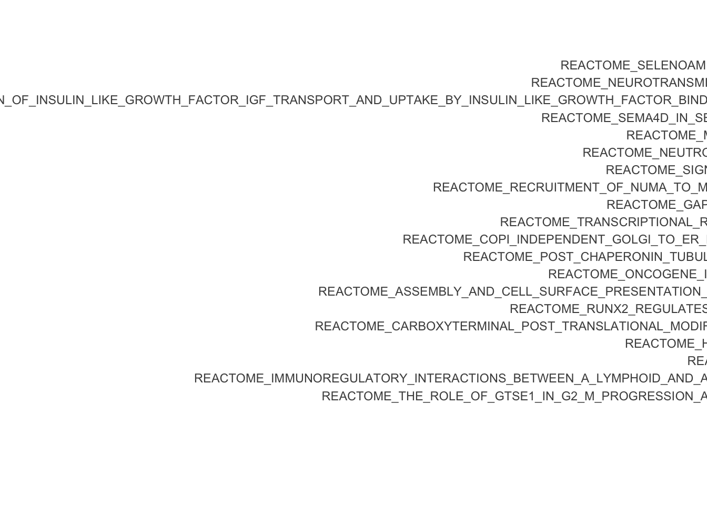
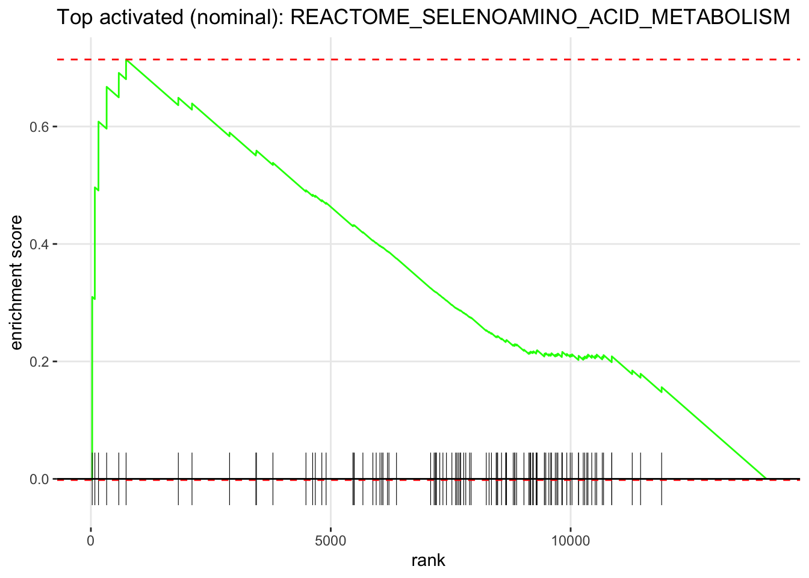
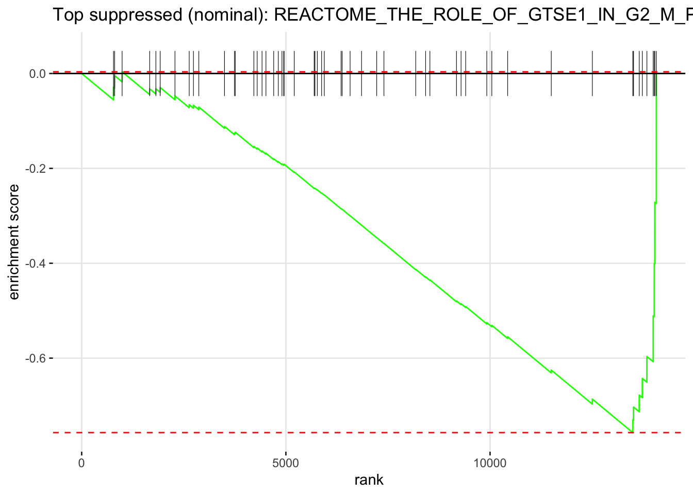

Part 2 — Gene Set Enrichment Analysis (GSEA)
What is GSEA?
GSEA asks: “Are genes in a gene set coordinately shifting up or down across my full ranked list?”
Unlike ORA, GSEA:
- Uses all tested genes — capturing coordinated but subtle changes
- Ranks genes by a metric encoding both significance and direction
- Returns a Normalised Enrichment Score (NES): positive = up in treatment; negative = down
Why signed log p-value for ranking?
rank = sign(LFC) x -log10(pvalue)
Genes at the top are significantly upregulated; genes at the bottom are significantly downregulated. This is more robust than ranking on LFC alone, which can place noisy high-fold-change genes from lowly expressed genes at the extremes.
📘 Note: Genes with pvalue = 0 (below machine precision in DESeq2) are excluded
because -log10(0) = Inf is not a valid ranking score.
Prepare the Ranked Gene List
ranked_df <- res_df %>%
filter(!is.na(pvalue), !is.na(log2FoldChange)) %>%
filter(pvalue > 0) %>%
mutate(rank_metric = sign(log2FoldChange) * -log10(pvalue)) %>%
arrange(desc(rank_metric)) %>%
distinct(gene, .keep_all = TRUE)
rank_vector <- ranked_df$rank_metric
names(rank_vector) <- ranked_df$gene
cat("Genes in ranked list :", length(rank_vector), "\n")## Genes in ranked list : 14080## Infinite values : 0## Top 5 (upregulated) : CACNB2, DUSP1, SPARCL1, SAMHD1, MAOA## Bottom 5 (downreg.) : CXCL12, PRSS35, KCTD12, ADAM12, VCAM1Retrieve MSigDB Gene Sets
We use the MSigDB Reactome collection (C2: CP:REACTOME) for human, reshaped into the named list
fgsea expects. Reactome is a good fit here: it is a large, curated pathway collection that includes
detailed immune, inflammatory and signalling pathways — the biology this experiment is about.
Tip: To use a different collection, change the arguments below (e.g. Hallmark via
collection = “H”, or GO:BP via C5 / GO:BP). The subcollection
and argument names for msigdbr() changed between versions, so the call below detects the
right names automatically.
# msigdbr argument names differ by version (collection/subcollection vs category/subcategory),
# and the KEGG subcollection was renamed, so we detect the available names first.
get_sets <- function(collection, subcollection = NULL) {
df <- tryCatch(
if (is.null(subcollection)) msigdbr(species = "Homo sapiens", collection = collection)
else msigdbr(species = "Homo sapiens", collection = collection, subcollection = subcollection),
error = function(e)
if (is.null(subcollection)) msigdbr(species = "Homo sapiens", category = collection)
else msigdbr(species = "Homo sapiens", category = collection, subcategory = subcollection)
)
split(x = df$gene_symbol, f = df$gs_name)
}
pathways_list <- get_sets("C2", "CP:REACTOME")
cat("Gene sets retrieved:", length(pathways_list), "\n")## Gene sets retrieved: 1839## Example set : REACTOME_2_LTR_CIRCLE_FORMATION## First 5 genes : BANF1, HMGA1, LIG4, PSIP1, XRCC4Run GSEA
We use fgseaMultilevel, which resolves very small p-values more accurately than the simple-permutation
fgsea(), with minSize = 15 and maxSize = 1000 to skip tiny unstable sets and enormous, uninformative
ones.
set.seed(42)
gsea_results <- fgseaMultilevel(
pathways = pathways_list,
stats = rank_vector,
minSize = 15,
maxSize = 1000
)
cat("Gene sets tested :", nrow(gsea_results), "\n")## Gene sets tested : 994## Significant (padj < 0.05): 0## Nominal (pval < 0.05) : 68What we see, and why it differs from ORA. In this dataset GSEA finds no gene set significant after multiple-testing correction (padj < 0.05), even though ORA returned dozens of enriched terms. This is not a contradiction — the two methods ask different questions:
- ORA asks whether the ~700 significant DE genes are concentrated in a term. They are — mostly in broad developmental and signalling terms, with cytokine/immune signalling among the down-regulated genes and adhesion, cytoskeleton and metal-handling terms among the up-regulated ones — so ORA lights up.
- GSEA asks whether an entire gene set shifts coherently across the full ranked list (every gene that DESeq2 tested, printed above). The dexamethasone response here is carried by a few hundred strongly-changed genes scattered across many pathways, rather than whole pathways moving together — so no set reaches the coordinated shift GSEA rewards.
This is a real result, not a failure: the glucocorticoid effect here is gene-specific rather than pathway-coherent, which is exactly the situation where ORA is the more sensitive tool. The nominal (uncorrected) sets below are worth reading as hypotheses only — note how mixed they are, and that they do not simply restate the ORA themes. Treat them as “GSEA could not settle this”, not as findings.
Inspect Gene Sets
# Sets passing multiple-testing correction (expected: none in this dataset)
gsea_padj_sig <- gsea_results %>% as.data.frame() %>% filter(padj < 0.05)
# Sets passing the nominal (uncorrected) threshold — for inspecting the biology
gsea_nom <- gsea_results %>%
as.data.frame() %>%
filter(pval < 0.05) %>%
arrange(pval)
cat("Sets significant after correction (padj < 0.05):", nrow(gsea_padj_sig), "\n")## Sets significant after correction (padj < 0.05): 0## Sets at nominal pval < 0.05 : 68DT::datatable(
gsea_nom %>%
select(pathway, NES, pval, padj, size) %>%
mutate(
direction = ifelse(NES > 0, "Activated", "Suppressed"),
across(where(is.numeric), \(x) signif(x, 3))
),
rownames = FALSE,
colnames = c("Gene set", "NES", "p-value", "padj", "Size", "Direction"),
extensions = c("Buttons", "Scroller"),
options = list(dom = "Bfrtip", buttons = c("copy", "csv"),
scrollX = TRUE, scrollY = 300, scroller = TRUE),
caption = "GSEA gene sets at nominal p < 0.05 (none survive padj correction — see note above)"
)NES Bar Plot — Top Sets by Nominal p-value
Because no set survives correction, we plot the top sets by nominal p-value. These do not represent statistically confirmed enrichment; they show the direction of the biology GSEA detects. Read them as suggestive, not conclusive.
gsea_bar <- gsea_nom %>%
slice_min(pval, n = 20) %>%
mutate(
direction = ifelse(NES > 0, "Activated", "Suppressed"),
pathway = fct_reorder(pathway, NES)
)
if (nrow(gsea_bar) > 0) {
gsea_nesplot <- ggplot(gsea_bar,
aes(x = NES, y = pathway, fill = direction)) +
geom_col(width = 0.7) +
geom_vline(xintercept = 0, color = "black", linewidth = 0.5) +
theme_bw() +
theme(legend.position = "bottom") +
labs(
title = "GSEA — top sets by nominal p-value (not padj-significant)",
subtitle = "Dexamethasone vs Untreated | Human ASM (Reactome)",
x = "Normalised Enrichment Score (NES)",
y = NULL,
fill = NULL
)
gsea_nesplot
} else {
cat("No gene sets with nominal pval < 0.05 to plot.\n")
}
Enrichment Plot — Top Sets
The enrichment plot shows the running sum of the enrichment score for a single gene set across the ranked gene list. The peak of the curve is the enrichment score; genes from the set are shown as vertical bars (the “rug”) at the bottom.
How to read it: the x-axis is every tested gene, ordered from most up-regulated (left) to most down-regulated (right). Each tick in the rug is one gene of the set. Ticks bunched at one end drive the curve to a high peak — coordinated enrichment. Ticks spread evenly across the axis give a flat, wandering curve and no enrichment.
top_up <- gsea_nom %>% filter(NES > 0) %>% slice_min(pval, n = 1) %>% pull(pathway)
top_down <- gsea_nom %>% filter(NES < 0) %>% slice_min(pval, n = 1) %>% pull(pathway)
if (length(top_up) > 0) {
print(
plotEnrichment(pathways_list[[top_up]], rank_vector) +
labs(title = paste("Top activated (nominal):", top_up))
)
}
if (length(top_down) > 0) {
print(
plotEnrichment(pathways_list[[top_down]], rank_vector) +
labs(title = paste("Top suppressed (nominal):", top_down))
)
}